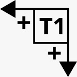

IDEX Calibration |
||
|
This calibration is the first one to do because it's required to make a print stick well on the build plate.
For multi color or multi material prints it is vital to adjust the nozzle positions to match exactly.
While this could be done physically this can quickly become quite tedious, it's easier to dis in software.
While the Z-calibration can be done automatically on CR-3D Machines, X and Y still need to be tuned manually. This file will assist you in doing this in a quick and easy way.
Print this file while switching extruders for each part will make offsets visible quickly and allow you to adjust while printing. You will quickly be able to hone in on the perfect settings by changing the offset in smaller and smaller increments until perfect.
Follow the below graphic to know which direction to adjust to.
